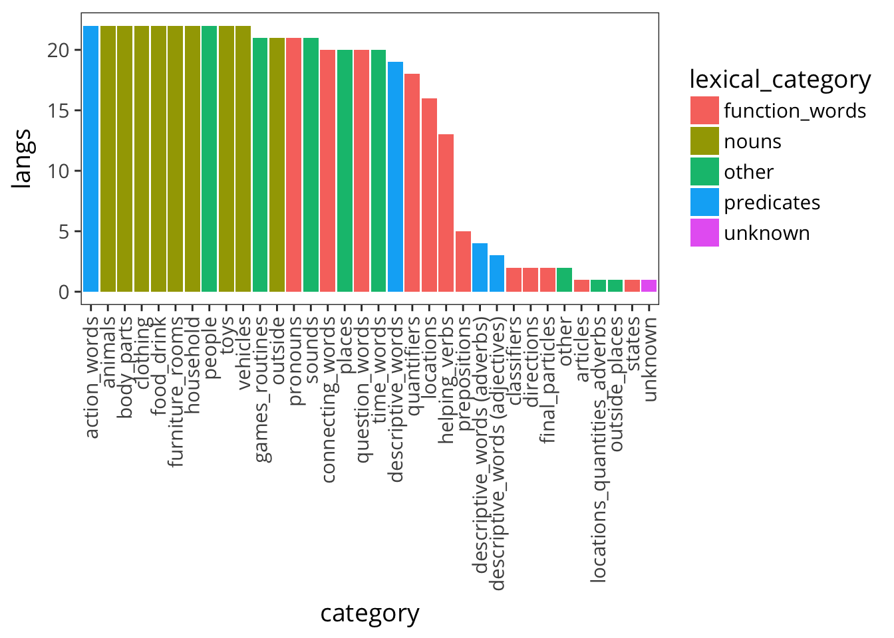
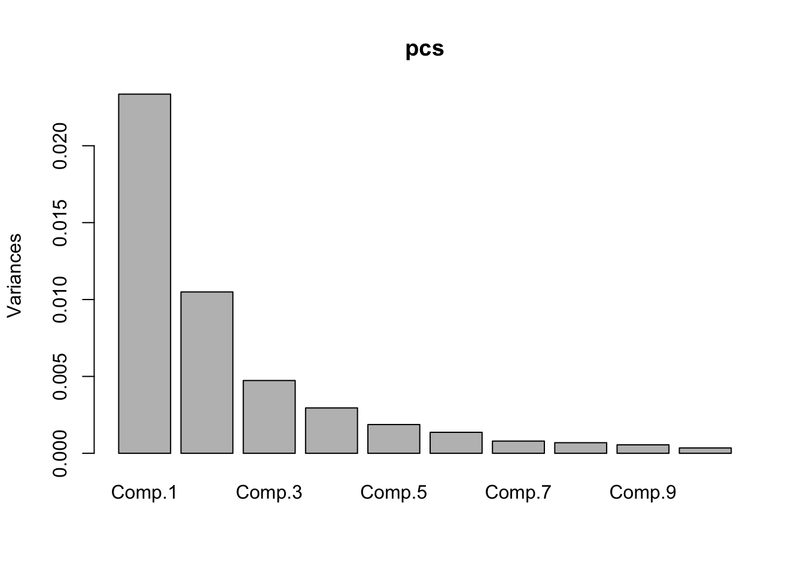
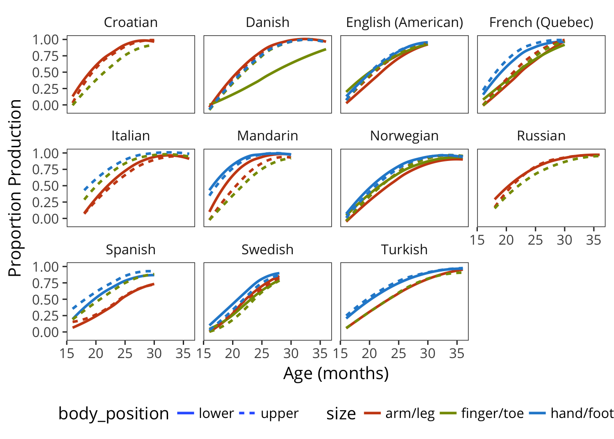
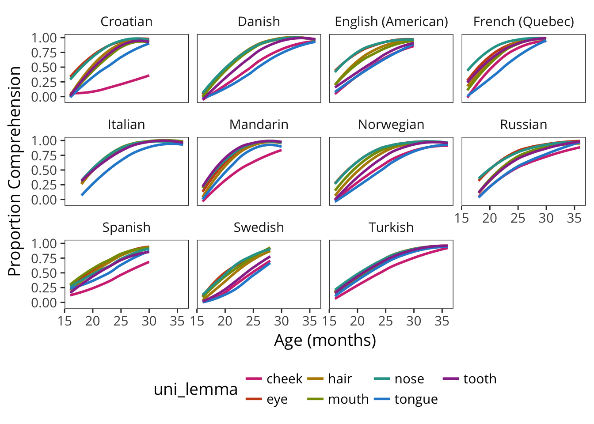

7 Categorical Composition: Semantics
Following the approach in the previous chapter, we investigate the consistency of semantic content categories across languages. By analogy with the “noun bias,” are some languages “vehicle-focused”? These analyses are expected to reveal cultural and linguistic differences in the specific words learned by children (perhaps due to differences in the content of their environment).
7.1 Data Prep
What are the most common categories?

Seems reasonable to take high-frequency categories.
We limit our analysis to traditional WS and WG forms for now because short forms like the British English TEDS don’t have category information. The sample sizes included in this analysis are given below.
7.2 Illustrating the Approach
English data alone.

Function for resampling data and computing area estimate for each sample.
Resample data and find the mean and CI of the area estimate.
7.3 Across languages

 ## Dimensionality Reduction Approach
## Dimensionality Reduction Approach
7.3.1 WS Production Nouns
Scree plot, indicating that PC1 dominates (for nouns, at least).

| Comp.1 | Comp.2 | Comp.3 | Comp.4 | Comp.5 | Comp.6 | Comp.7 | Comp.8 | Comp.9 | Comp.10 | Comp.11 | Comp.12 | |
|---|---|---|---|---|---|---|---|---|---|---|---|---|
| outside | -0.07 | -0.14 | -0.28 | -0.21 | 0.46 | -0.04 | 0.62 | -0.25 | 0.00 | 0.44 | 0.02 | 0.00 |
| people | -0.06 | 0.33 | 0.70 | 0.35 | 0.18 | 0.06 | 0.27 | 0.24 | 0.10 | 0.29 | -0.12 | -0.02 |
| furniture_rooms | -0.01 | -0.03 | 0.07 | -0.12 | -0.60 | 0.04 | 0.00 | 0.00 | 0.13 | 0.57 | 0.50 | 0.18 |
| animals | 0.23 | -0.34 | 0.20 | 0.24 | 0.11 | -0.28 | 0.20 | 0.02 | -0.38 | -0.24 | 0.34 | 0.53 |
| clothing | 0.25 | -0.26 | 0.29 | 0.16 | -0.12 | 0.42 | -0.03 | -0.71 | -0.13 | 0.03 | -0.15 | -0.15 |
| household | -0.08 | -0.01 | -0.13 | 0.01 | -0.41 | 0.12 | 0.33 | 0.06 | 0.05 | -0.05 | -0.63 | 0.52 |
| food_drink | 0.01 | -0.07 | -0.08 | 0.04 | -0.32 | 0.13 | 0.36 | 0.33 | -0.61 | -0.03 | 0.00 | -0.50 |
| vehicles | 0.41 | -0.55 | 0.02 | -0.09 | 0.19 | 0.27 | -0.21 | 0.49 | 0.13 | 0.27 | -0.19 | 0.01 |
| toys | 0.09 | -0.19 | -0.18 | 0.52 | -0.15 | -0.64 | -0.10 | -0.10 | 0.09 | 0.28 | -0.25 | -0.23 |
| games_routines | 0.34 | -0.03 | 0.39 | -0.61 | -0.16 | -0.45 | 0.18 | -0.06 | 0.13 | -0.15 | -0.15 | -0.18 |
| body_parts | 0.15 | -0.15 | -0.11 | 0.27 | -0.13 | 0.16 | 0.42 | 0.07 | 0.62 | -0.39 | 0.27 | -0.20 |
| sounds | 0.75 | 0.56 | -0.29 | 0.09 | 0.03 | 0.06 | 0.03 | -0.02 | -0.08 | 0.09 | 0.02 | 0.10 |

7.4 Specific semantic categories
Body parts as an example.
Get unilemma set.
Get those high-coverage uni-lemmas.
Plot.

